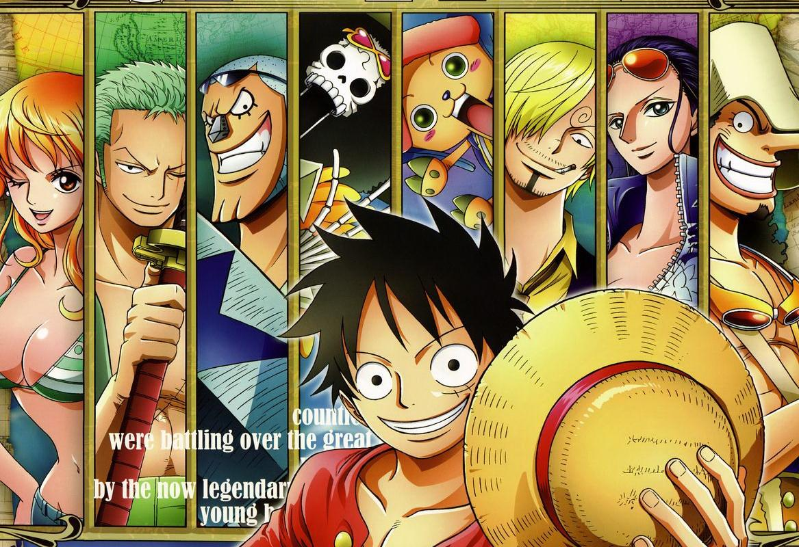
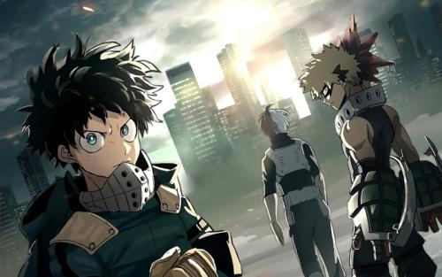
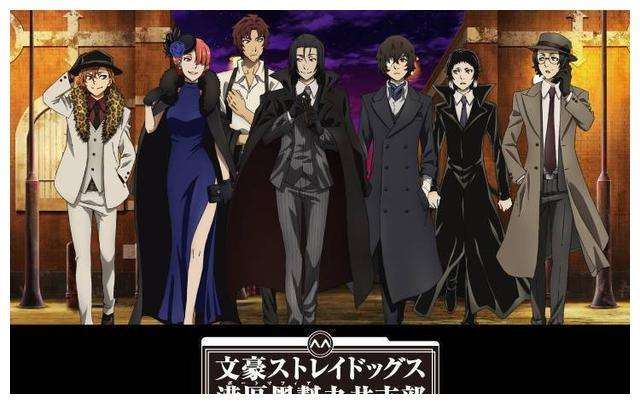
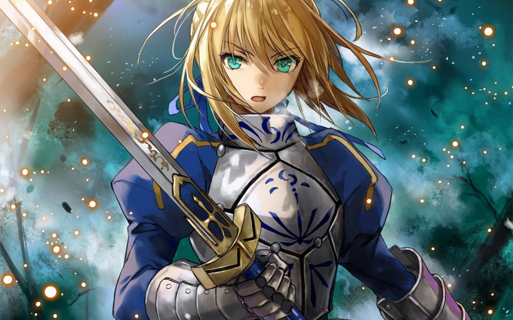
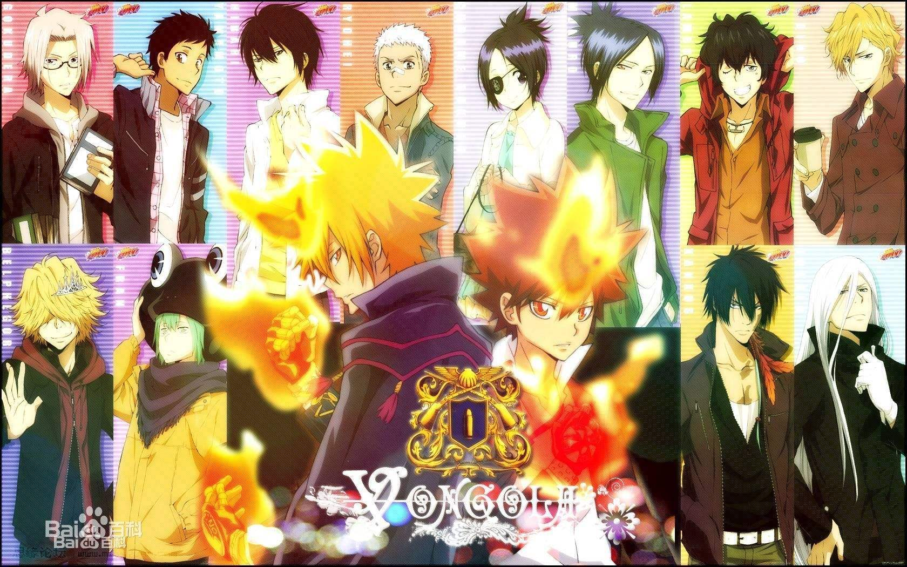
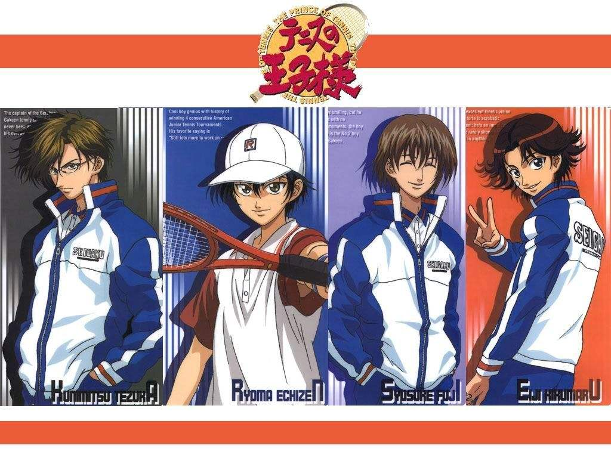

有一个梦想成为海贼王的少年叫路飞，他因误食“恶魔果实”而成为了橡皮人，在获得超人能力的同时付出了一辈子无法游泳的代价。十年后，路飞为实现与因救他而断臂的香克斯的约定而出海，他在旅途中不断寻找志同道合的伙伴，开始了以成为海贼王为目标的冒险旅程


大部分的人类，在这个时代里都拥有名为“个性”的力量，但有力量之人却不一定都属于正义的一方。只要邪恶出现的地方，必定会有英雄挺身而出拯救众人。
中岛敦被赶出孤儿院，即将饿死在横滨时，遇到了投河自尽的太宰治。敦声称自己一直被猛虎追赶，太宰便借机让其协助武装侦探社找寻“食人虎”。最终，“食人虎”的真面目令人咋舌，而且此事件的背后竟然隐藏着巨大的阴谋……文豪们的异能力之战，即将打响


对战型迷宫RPG类型的游戏。也就是说本作是一款融入了对战以及迷宫要素的角色扮演游戏。具体地说，游戏的流程就是被分为冒险、战斗以及剧情这三部分。冒险时会以第三人称视角在类似于迷宫的场景中进行移动，这是调查和触发故事发展的基本；而遇敌发生战斗后则会自动切入对战模式，虽然比不上格斗游戏的对抗性以及节奏感，但战斗过程的激烈程度却丝毫不会有半点损失；最后关于剧情部分，本作采用的是和其他角色扮演游戏一样的人物对话方式进行演绎，细致入微的过场动画也不容错过。
故事围绕彭格列（意大利黑手党）第十代首领沢田纲吉与其家族成员的成长而展开的一系列故事。彭格列初代后裔沢田纲吉是一个做什么都不行的“废柴纲”，但是为了培养成为彭格列家族首领，从意大利来了一名杀手叫做里包恩来教导纲吉。内心善良的他不愿意伤害别人，但他为了保护同伴而开始承担起责任，成长为一名优秀的首领。


进入网球名校——青春学园初中部学习的越前龙马，在美国青少年网球大赛上连续四次获胜，被誉为网球天才少年。越前龙马在青春学园网球部中遇到了实力强劲的前辈们，但他以惊人的实力，最终赢得了前辈们的认可正式加入了校队，开始了通往全国大赛的奋斗之路。